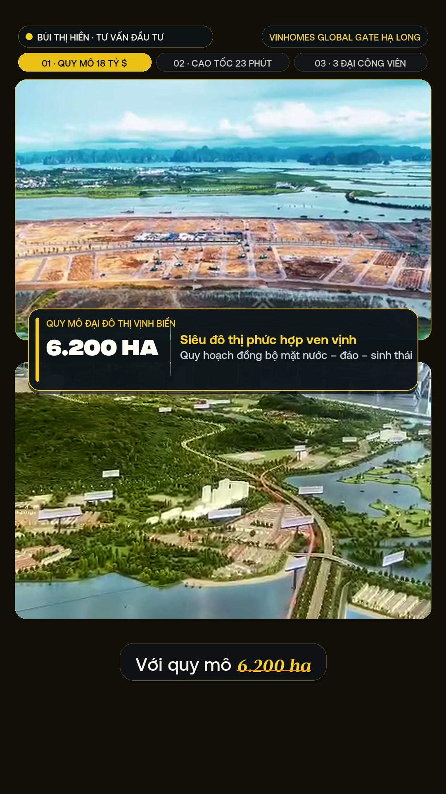
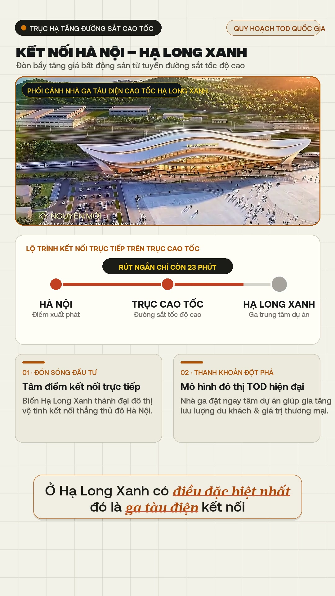
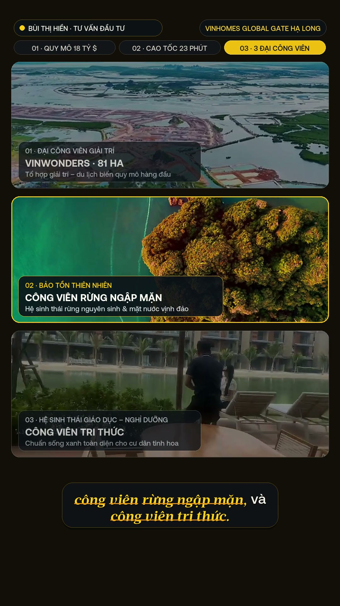
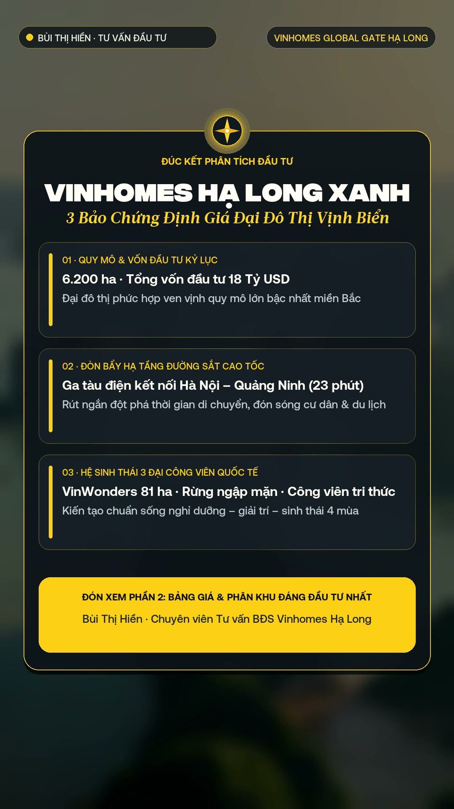

Kỹ năng Edit Video Bất Động Sản (BDS-Edit V1.0)
Đóng băng toàn bộ tiêu chuẩn hậu kỳ Bất Động Sản Cao Cấp thành kỹ năng bds-edit — Lấy Video V2 của Chị Bùi Thị Hiền (Dự án Vinhomes Hạ Long Xanh 6.200 ha · 18 Tỷ USD) làm Mẫu Chuẩn #01 (Mẫu 01). Gọi tự nhiên bằng câu “Hãy edit video sau theo phong cách bất động sản” hoặc gõ EDIT BDS.
Tài liệu này gom trọn vẹn: (0) 6 Nâng cấp cốt lõi chuẩn V1.0 đã chốt cùng anh Việt & CLAUDE2, (1) Giải phẫu Mẫu Chuẩn #01: Chị Bùi Thị Hiền — Vinhomes Hạ Long Xanh (V2) kèm Video & 12 Frames QA, (2) Bảng đối chiếu chuyên sâu bds-edit vs spa-edit, (3) Đặc tả 4 Khuôn Motion Graphic đặc thù BĐS, (4) Công thức Quay Video Chuẩn AI-Ready “3V + 2 Giây” khi nói vấp/quên lời và (5) Kiến trúc đóng gói tại ~/.gemini/config/skills/bds-edit/.
EDIT BDS💎 6 Tiêu Chuẩn Cốt Lõi Đóng Băng Trong Kỹ Năng bds-edit (Đúc Kết Từ Mẫu 01 Chị Bùi Thị Hiền V2)
LUXURY REAL ESTATE STANDARD V1.0
Dùng bộ lọc cut_stumbles_vad.py bóc tách 10 đoạn thoại liền mạch từ clip gốc (41.42s), loại bỏ 100% đoạn ấp úng và cắt bỏ câu cuối bị quên lời (“và một cái công viên nữa... tự nhiên lại quên”), nối âm bằng 12ms crossfade mượt mà.
Bỏ hoàn toàn hộp pill vàng đặc giữa dòng. Từ khóa được in bằng SVN-Acta-BoldItalic 45px màu vàng kim #FFD018 kèm gạch chân mảnh 2px #FF9914, khoảng cách dòng khít 52px (1.15x) trên viên nang kính mờ hoặc thẻ kem #EFEAE0.
Tuyệt đối CẤM ghi các nhãn kiểu “GIỌNG PHÂN TÍCH THẬT”, “QUAY THỰC TẾ” hay “BẢN VẼ MINH HỌA TRỰC QUAN”. Thay thế bằng định vị chuyên gia (BÙI THỊ HIỀN · TƯ VẤN ĐẦU TƯ), thanh lộ trình 3 trụ cột và nhãn công bố Phối cảnh Quy hoạch.
Trong 0.00s – 4.92s, hiển thị thẻ bệ đá kính tối viền vàng gắn Biểu tượng La bàn Vàng 8 cánh phát sáng, kết hợp dòng phụ đề SVN-Acta-BoldItalic và tiêu đề lớn FDIntegralCF-Heavy (“CÓ NÊN MUA HẠ LONG XANH?”). Ẩn phụ đề chạy trong 0–2.15s để không đè chữ.
Áp dụng đường cong gia tốc spa-edit $E(u) = 1 - (1-u)^{3.8}$ trong đúng 0.28s (8.5 frames): mở cận mặt ở 1.38x, thu về 1.12x lộ sa bàn, và đẩy cận 1.44x–1.46x kèm Adaptive Unsharp Mask đè chính xác lên các điểm nối cắt.
Thay thế hoàn toàn clip hội trường bị nghiêng (item_03.mp4) bằng cảnh hội trường cân bằng ngang (item_06.mp4), cận cảnh sa bàn (item_08.mp4), biệt thự thực tế (item_16.mp4), tàu cao tốc 3D và khép lại bằng Thẻ Đúc Kết 3 Bảo Chứng Đầu Tư.
1. Giải phẫu Mẫu Chuẩn #01 (Mẫu 01): Chị Bùi Thị Hiền — Vinhomes Hạ Long Xanh (V2 Master)
Dưới đây là toàn bộ sản phẩm thực tế của Mẫu 01 (V2 Master — 44.50s, 1080x1920 @ 30fps) sau khi nâng cấp theo chỉ đạo của anh Việt và hội thảo cùng CLAUDE2 (Claude Opus 5.5):
🎬 Video Thành Phẩm Mẫu 01 (V2 Master) & 4 Khuôn Motion Graphic Đặc Thù Bất Động Sản
MẪU CHUẨN #01 • 44.50S • 1080x1920/Users/vietmac/Documents/CODE/offline/hien_halong_xanh/bui_thi_hien_halong_xanh_v2_final.mp4

Ghép 2 viewport (Trên: Flycam thực địa đã lọc chữ rác; Dưới: Sa bàn item_08.mp4) + Thẻ số liệu nổi 6.200 HA / 18 TỶ USD.

Nền bản vẽ #F5F2EB (0% meta-label) + Phối cảnh 3D Nhà ga cao tốc + Sơ đồ 23 PHÚT có Radar Pulse & Phụ đề 5B Light Theme.

3 tầng Bento xếp dọc (VinWonders 81ha · Rừng ngập mặn · Công viên tri thức), tự động sáng tầng đang đọc và làm dịu 55% 2 tầng còn lại.

Đúc kết 3 Bảo Chứng Định Giá trên nền vịnh biển mờ sang trọng + Nút CTA hẹn đón xem Phần 2 (thay thế hoàn hảo câu cuối bị quên lời).
qa_master_12frames_v3.jpg)
🔍 Mở ảnh gốc độ phân giải cao (Full HD) ↗
1.2. Bảng Giải Phẫu 8 Phân Cảnh & Lịch Whip-Snap Zoom 0.28s Của Mẫu 01
| PHÂN CẢNH & MỐC GIÂY | LỜI THOẠI SẠCH (ĐÃ CẮT 10 ĐOẠN VẤP) | KHUÔN HÌNH & NHỊP WHIP-SNAP ZOOM (0.28S) |
|---|---|---|
| Scene 1 00.00s – 04.92s |
“Có nên mua Vinhomes Hạ Long Xanh? Anh chị hãy cùng với em Hiền phân tích và đưa ra kết luận nhé.” | A-Roll + Hero Title STYLE-17 (La bàn vàng phát sáng). Mở cận mặt ở 1.38x ➔ Tại 2.15s Whip-Snap Zoom-Out 1.38x → 1.12x lộ sa bàn Vịnh Di Sản & trượt thanh 3 Trụ cột. |
| Scene 2A 04.92s – 08.15s |
“Với quy mô 6.200 ha...” (Đã cắt 2 nhịp ngập ngừng tại 9.54s và 11.10s gốc) | Khuôn ① (Dual-Viewport Scale Card): Trên là Flycam thực địa tiến độ + Dưới là Cận cảnh sa bàn sắc nét (item_08.mp4) + Thẻ số liệu nổi 6.200 HA. |
| Scene 2B 08.15s – 11.40s |
“...và tổng vốn đầu tư 18 tỷ đô — đây là một con số không hề nhỏ,” | Khuôn ① (Dual-Viewport Capital Card): Trên là Vịnh du thuyền Hoàng hôn 3D + Dưới là Toàn cảnh Hội trường Kick-off cân bằng ngang (item_06.mp4) + Thẻ nổi 18 TỶ USD. |
| Scene 3 11.40s – 20.08s |
“đã biến Hạ Long Xanh trở thành tâm điểm nóng hơn bao giờ hết. Rất nhiều khách hàng hỏi với diện tích và quy mô đó thì Hạ Long Xanh có gì? Em Hiền sẽ phân tích cho anh chị nhé.” | A-Roll Chị Hiền + 3 cú Whip-Snap Zoom (0.28s):• 12.00s: Punch-In 1.16x → 1.44x (“tâm điểm nóng”)• 14.35s: Zoom-Out 1.44x → 1.16x (“Rất nhiều khách hàng hỏi...”)• 18.68s: Punch-In 1.16x → 1.46x che vết cắt tại 18.70s. |
| Scene 4 20.08s – 26.58s |
“Ở Hạ Long Xanh có điều đặc biệt nhất đó là ga tàu điện kết nối tuyến đường cao tốc Hà Nội – Quảng Ninh,” | Khuôn ② (2D/3D Masterplan & Transit Line #F5F2EB): Khung 3D Phối cảnh Nhà ga tàu điện cao tốc + Sơ đồ 3 ga chạy tia đỏ tới nút Radar HẠ LONG XANH + 2 thẻ phân tích TOD. 0% Meta-Label! |
| Scene 5 26.58s – 33.08s |
“giúp rút ngắn khoảng cách di chuyển xuống chỉ còn 23 phút di chuyển. Chưa kể đến ở Hạ Long Xanh có những...” | Khuôn ① (Dual-Viewport Transit Card): Trên là Đoàn tàu cao tốc lướt qua cầu vượt biển vào thành phố + Dưới là Flycam đại lộ 60m thực địa + Thẻ nổi 23 PHÚT. |
| Scene 6 33.08s – 35.25s |
“...cơ sở hạ tầng bậc nhất thế giới như...” | A-Roll Chị Hiền: Tại 34.18s đánh Whip-Snap Punch-In 1.20x → 1.46x che vết cắt tại 34.20s và nhấn mạnh cụm “bậc nhất thế giới”. |
| Scene 7 35.25s – 41.42s |
“...công viên VinWonders rộng 81 ha, công viên rừng ngập mặn, và công viên tri thức.” (Cắt sạch câu quên lời sau 53.30s gốc) | Khuôn ③ (3-Tier Megapark Bento Showcase): 3 tầng xếp dọc sáng lần lượt theo đúng giọng đọc (VinWonders 81ha → Rừng ngập mặn → Công viên tri thức với clip biệt thự thật item_16.mp4). |
| Scene 8 41.42s – 44.50s |
(Nhạc nền sang trọng + SFX chuyển cảnh) | Khuôn ④ (Executive Investment Verdict Outro Card): Đúc kết 3 Bảo Chứng Định Giá Vinhomes Hạ Long Xanh + Nút vàng hẹn đón xem Phần 2 (Bảng giá & Phân khu). |
2. Phân tích chuyên sâu sự khác biệt giữa bds-edit (Bất Động Sản) và spa-edit (Spa / Thẩm Mỹ)
Mặc dù cùng kế thừa lõi công nghệ Whip-Snap Zoom 0.28s và Phụ đề 5B khóa X-Height 1:1, kỹ năng bds-edit được thiết kế riêng cho tâm lý ra quyết định tài sản lớn của nhà đầu tư Bất Động Sản:
| TIÊU CHÍ ĐỐI CHIẾU | 🏛️ BDS-EDIT (BẤT ĐỘNG SẢN — MẪU 01 CHỊ HIỀN) | 🌿 SPA-EDIT (SPA / THẨM MỸ / NHA KHOA V10) |
|---|---|---|
| 1. Tâm lý khách hàng | Lý trí, thận trọng, sợ chôn vốn tiền tỷ. Đọc cảm giác “đắt tiền, quy mô, chuẩn xác” trên màn hình trước khi nghe. Cần: Con số quy mô, Đòn bẩy hạ tầng, Tiện ích & Thanh khoản. | Cảm xúc, sợ đau / sợ hỏng gương mặt. Cần thấy ngay kết quả Trước–Sau trực diện, cơ chế mô học dễ hiểu và sự an tâm. |
| 2. Đặc thù góc quay A-Roll | Quay tại sảnh sa bàn rộng hoặc thực địa dự án nên đứng xa máy, cầm tay dễ rung và hay nói vấp số liệu. Dùng Face-Center Tracking + Whip-Snap Zoom 1.12x ↔ 1.46x để kéo cận mặt và che vết cắt. |
Ngồi cố định tại bàn tư vấn gần ống kính. Dùng Affine Eye-Lock Y=650px giữ tĩnh sắc nét hơn 85% thời lượng. |
| 3. Bảng màu & Typography | Luxury Architectural Editorial: Midnight Navy (#0E1218), Champagne Gold (#FFD018), Giấy quy hoạch (#F5F2EB). Font FDIntegralCF-Heavy + SVN-Acta-BoldItalic + La bàn vàng phát sáng. |
Medical Clean Editorial: Trắng kem y khoa (#F5F2EB), Xanh cổ vịt (#0F766E), Hồng đào/Amber. |
| 4. Khuôn Motion Graphic | ① Dual-Viewport Scale & Capital Card ② 2D/3D Masterplan & Transit Time Line ③ 3-Tier Megapark Bento Showcase ④ Executive Investment Verdict Outro Card. |
① Scientific Atlas 2D (12 chủ đề da/răng) ② Vertical Roadmap #MG2_ROADMAP③ Side-by-Side Before/After Showcase (10 kiểu). |
| 5. Cảnh trám (B-Roll) | Flycam thực địa tiến độ + Cận cảnh Sa bàn + Phối cảnh 3D Nhà ga/Tàu cao tốc/Biệt thự. Cấm dùng cảnh nghiêng đường chân trời hoặc dính chữ rác. | Cận cảnh vùng điều trị Trước làm / Sau 1 buổi làm + Không gian phòng dịch vụ Spa. |
| 6. Luật nhãn & Kết thúc | 0% Meta-Label kỹ thuật. Hiển thị thanh lộ trình 3 trụ cột (01 · 02 · 03), nhãn công bố Phối cảnh Quy hoạch và khép bằng Thẻ Đúc Kết 3 Bảo Chứng + Hẹn Phần 2. |
0% logo ở đầu/thân bài; chỉ bật Logo thương hiệu lúc đọc CTA và màn hình đen OUTRO 01 kèm giá trải nghiệm. |
3. Công thức Quay Video Chuẩn AI-Ready (“3V + 2 Giây”) khi nói vấp hoặc quên lời
Khi học viên Bất Động Sản đi quay tại sa bàn, thực địa dự án hoặc nhà mẫu mà bị nói vấp, đọc nhầm số liệu hoặc quên lời, học viên không cần tắt máy quay lại từ đầu. Chỉ cần áp dụng đúng công thức “3V + 2 Giây” (Vấp → Vỗ tay → Về đầu câu) dưới đây để script cut_stumbles_vad.py tự động cắt sạch 100%:
Khi vừa nói vấp, hãy khép miệng tự nhiên và đứng yên 2 giây. Bộ dò khoảng lặng (20ms RMS VAD) sẽ nhận diện vùng năng lượng âm thanh < -42 dBFS này làm điểm cắt an toàn tuyệt đối, không bao giờ cắt phạm vào chữ trước đó.
Tiếng vỗ tay tạo ra đỉnh xung âm thanh sắc nhọn (Transient Spike > -6 dBFS). Script cut_stumbles_vad.py lập tức đánh dấu đoạn nói ngay trước tiếng vỗ tay là bản nháp lỗi cần xóa bỏ.
Hạ tay về vị trí cũ, nhìn ống kính 1 giây rồi nói lại từ chữ đầu tiên của câu vừa vấp (tuyệt đối không nói nối ở giữa câu). Khi ghép nối và bồi thêm cú Whip-Snap Zoom 0.28s, ngữ điệu và khẩu hình sẽ liền mạch 100%.
- Khi quên hẳn câu kết ở cuối video: Ngừng nói ngay tại dấu chấm câu gần nhất, giữ nét mặt tự tin nhìn ống kính 2 giây rồi nói khẩu lệnh
“BỎ CÂU CUỐI”trước khi tắt máy. Hệ thốngbds-editsẽ tự động cắt bỏ đoạn quên lời và bù vào cuối video Khuôn ④: Thẻ Đúc Kết 3 Bảo Chứng Đầu Tư (Executive Investment Verdict Outro Card) dài3.08s. - Cỡ cảnh đứng trước sa bàn: Đứng cách máy 1.2m – 1.8m (khung ngang ngực / thắt lưng) để gương mặt sắc nét ngay từ đầu, kết hợp bật quay
4K @ 30fpsvà khóa cân bằng ngang (Grid Level) chống nghiêng đường chân trời. - Quay kèm 5 cảnh trám B-Roll thực tế (5 giây/cảnh): (1) Toàn cảnh sảnh sa bàn cân bằng ngang, (2) Cận cảnh tay chỉ vào phân khu trên sa bàn, (3) Cận cảnh vịnh du thuyền / công viên trên sa bàn, (4) Biệt thự mẫu / thực tế dự án, (5) Không khí nhà đầu tư tại sự kiện.
4. Kiến trúc đóng gói tại ~/.gemini/config/skills/bds-edit/ & Lệnh thực thi
Toàn bộ kỹ năng bds-edit đã được đóng gói độc lập, tuân thủ nguyên tắc an toàn tuyệt đối (không chạm vào spa-edit hay các kỹ năng hiện có):
bds-edit V1.0~/.gemini/config/skills/bds-edit/
├── SKILL.md # Đặc tả toàn diện Kỹ năng Edit Video Bất Động Sản V1.0
├── references/
│ ├── shoot_guide_ai_ready.md # Cẩm nang & Công thức Quay AI-Ready "3V + 2 Giây" cho học viên BĐS
│ └── bds_motion_specs.md # Đặc tả tọa độ 4 Khuôn Motion Graphic BĐS & Phụ đề 5B
├── scripts/
│ └── cut_stumbles_vad.py # Script tự động phát hiện & cắt đoạn vấp/quên lời + lập lịch Whip-Snap Zoom
└── examples/
└── mau_01_hien_halong_xanh/
├── README.md # Hồ sơ giải phẫu Mẫu 01: Chị Bùi Thị Hiền — Vinhomes Hạ Long Xanh (V2)
└── render_hien_halong_xanh.py # Mã nguồn Master Renderer V2 chuẩn hóa của Mẫu 01python3 ~/.gemini/config/skills/bds-edit/scripts/cut_stumbles_vad.py --demo-mau01python3 ~/.gemini/config/skills/bds-edit/examples/mau_01_hien_halong_xanh/render_hien_halong_xanh.py